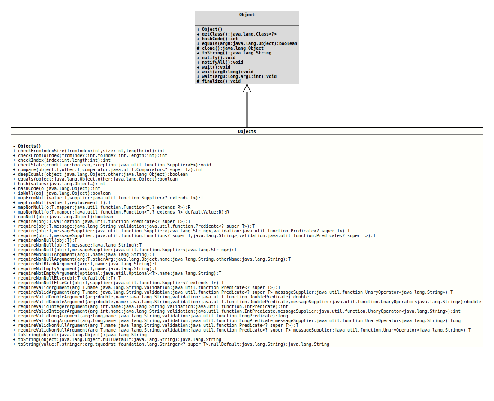

This class consists of several utility methods working on
Object
instances, similar to those on
Arrays
or
Collections.
The class was originally inspired by the class of the same name that
was finally introduced with the Java 7 release; some of its methods
will delegate to
java.util.Objects,
others will extend the functionality of the methods with the same
name from java.util.Objects.
If a method from java.util.Objects would throw a
NullPointerException,
the method with the same name from this class would throw a
ValidationException
instead.
- Author:
- Thomas Thrien (thomas.thrien@tquadrat.org)
- Version:
- $Id: Objects.java 1041 2022-12-18 22:14:52Z tquadrat $
- Since:
- 0.1.0
- UML Diagram
-

UML Diagram for "org.tquadrat.foundation.lang.Objects"
{kind=link}
-
Constructor Summary
Constructors -
Method Summary
Modifier and TypeMethodDescriptionstatic final intcheckFromIndexSize(int fromIndex, int size, int length) Checks if the sub-range fromfromIndex(inclusive) tofromIndex + size(exclusive) is within the bounds of range from0(inclusive) tolength(exclusive).static final intcheckFromToIndex(int fromIndex, int toIndex, int length) Checks if the sub-range fromfromIndex(inclusive) totoIndex(exclusive) is within the bounds of range from0(inclusive) tolength(exclusive).static final intcheckIndex(int index, int length) Checks if theindexis within the bounds of the range from0(inclusive) tolength(exclusive).static final <E extends Exception>
voidcheckState(boolean condition, Supplier<E> exception) Throws the exception provided by the given supplier if the condition resolves tofalse.static final <T> intcompare(T a, T b, Comparator<? super T> comparator) Returns 0 if the arguments are identical andcomparator.compare(a, b)otherwise.static final booleandeepEquals(Object a, Object b) Returnstrueif the arguments are deeply equal to each other andfalseotherwise.static final booleanReturnstrueif the arguments are equal to each other andfalseotherwise.static final intGenerates a hash code for a sequence of input values.static final intReturns the hash code of a non-nullargument and 0 for anullargument.static final booleanReturnstrueif the provided reference isnull, otherwise returnsfalse.static final <T,R> R mapNonNull(T o, Function<T, ? extends R> mapper) Maps (converts) the given object instance by applying the provided mapper if the instance is notnull.static final <T,R> R mapNonNull(T o, Function<T, ? extends R> mapper, R defaultValue) Maps (converts) the given object instance by applying the provided mapper if the instance is notnullor returns the given default value.static final booleanReturnstrueif the provided reference is notnull, otherwise returnsfalse.static final <T> TApplies the given validation on the given value, and if that fails, anValidationExceptionwith the specified message is thrown.static final <T> TApplies the given validation on the given value, and if that fails, a customizedValidationExceptionis thrown.static final <T> TApplies the given validation on the given value, and if that fails, anValidationExceptionis thrown.static final <T> TApplies the given validation on the given value, and if that fails, a customizedValidationExceptionis thrown.static final <T> TrequireNonNull(T obj) static final <T> TrequireNonNull(T obj, String message) Checks if the given valueobjisnulland throws aValidationExceptionwith the specified message if it isnull.static final <T> TrequireNonNull(T obj, Supplier<String> messageSupplier) Checks that the specified object reference is notnulland throws a customizedValidationExceptionif it is.static final <T> TrequireNonNullArgument(T arg, Object otherArg, String name, String otherName) Checks if not both of the given argumentsargandotherArgarenulland throws aNullArgumentExceptionif both arenull.static final <T> TrequireNonNullArgument(T arg, String name) static final <T> TrequireNonNullElse(T obj, T defaultObj) Returns the first argument if it is notnull, otherwise it returns the non-nullsecond argument.static final <T> TrequireNonNullElseGet(T obj, Supplier<? extends T> supplier) Returns the first argument if it is notnull, otherwise it returns the non-nullvalue returned bysupplier.get().static final <T extends CharSequence>
TrequireNotBlankArgument(T arg, String name) Checks if the given String argumentargisnull, empty or blank and throws aNullArgumentExceptionif it isnull, anEmptyArgumentExceptionif it is empty, or aBlankArgumentExceptionif it is blank.static final <T> TrequireNotEmptyArgument(Optional<T> optional, String name) Checks if the given argumentoptionalof typeOptionalisnullor empty and throws aNullArgumentExceptionif it isnull, or aEmptyArgumentExceptionif it is empty.static final <T> TrequireNotEmptyArgument(T arg, String name) Checks if the given argumentargisnullor empty and throws aNullArgumentExceptionif it isnull, or anEmptyArgumentExceptionif it is empty.static final <T> TrequireValidArgument(T arg, String name, Predicate<? super T> validation) Applies the given validation on the given value, and if that fails, anValidationExceptionwith a default message is thrown.static final <T> TrequireValidArgument(T arg, String name, Predicate<? super T> validation, UnaryOperator<String> messageSupplier) Applies the given validation on the given value, and if that fails, aValidationExceptionis thrown.static final doublerequireValidDoubleArgument(double arg, String name, DoublePredicate validation) Applies the given validation on the given value, and if that fails, anValidationExceptionwith a default message is thrown.static final doublerequireValidDoubleArgument(double arg, String name, DoublePredicate validation, UnaryOperator<String> messageSupplier) Applies the given validation on the given value, and if that fails, aValidationExceptionis thrown.static final intrequireValidIntegerArgument(int arg, String name, IntPredicate validation) Applies the given validation on the given value, and if that fails, anValidationExceptionwith a default message is thrown.static final intrequireValidIntegerArgument(int arg, String name, IntPredicate validation, UnaryOperator<String> messageSupplier) Applies the given validation on the given value, and if that fails, aValidationExceptionis thrown.static final longrequireValidLongArgument(long arg, String name, LongPredicate validation) Applies the given validation on the given value, and if that fails, anValidationExceptionwith a default message is thrown.static final longrequireValidLongArgument(long arg, String name, LongPredicate validation, UnaryOperator<String> messageSupplier) Applies the given validation on the given value, and if that fails, aValidationExceptionis thrown.static final <T> TrequireValidNonNullArgument(T arg, String name, Predicate<? super T> validation) Applies the given validation on the given value (that must not benull), and if that fails, anValidationExceptionwith a default message is thrown.static final <T> TrequireValidNonNullArgument(T arg, String name, Predicate<? super T> validation, UnaryOperator<String> messageSupplier) Applies the given validation on the given value (that must not benull), and if that fails, aValidationExceptionis thrown.static final Stringstatic final Stringstatic final <T> String
-
Constructor Details
-
Objects
private Objects()No instance allowed for this class.
-
-
Method Details
-
checkFromIndexSize
@API(status=STABLE, since="0.0.5") public static final int checkFromIndexSize(int fromIndex, int size, int length) Checks if the sub-range from
fromIndex(inclusive) tofromIndex + size(exclusive) is within the bounds of range from0(inclusive) tolength(exclusive).The sub-range is defined to be out-of-bounds if any of the following inequalities is true:
fromIndex < 0size < 0fromIndex + size > length, taking into account integer overflowlength < 0, which is implied from the former inequalities
Calls
java.util.Objects.checkFromIndexSize(int,int,int)internally.- Parameters:
fromIndex- The lower-bound (inclusive) of the sub-interval.size- The size of the sub-range.length- The upper-bound (exclusive) of the range.- Returns:
- The
fromIndexif the sub-range is within bounds of the range. - Throws:
IndexOutOfBoundsException- The sub-range is out-of-bounds.
-
checkFromToIndex
@API(status=STABLE, since="0.0.5") public static final int checkFromToIndex(int fromIndex, int toIndex, int length) Checks if the sub-range from
fromIndex(inclusive) totoIndex(exclusive) is within the bounds of range from0(inclusive) tolength(exclusive).The sub-range is defined to be out-of-bounds if any of the following inequalities is true:
fromIndex < 0fromIndex > toIndextoIndex > lengthlength < 0, which is implied from the former inequalities
Calls
java.util.Objects.checkFromToIndex(int,int,int)internally.- Parameters:
fromIndex- The lower-bound (inclusive) of the sub-range.toIndex- The upper-bound (exclusive) of the sub-range.length- The upper-bound (exclusive) the range.- Returns:
- The
fromIndexif the sub-range is within bounds of the range. - Throws:
IndexOutOfBoundsException- The sub-range is out-of-bounds.
-
checkIndex
Checks if the
indexis within the bounds of the range from0(inclusive) tolength(exclusive).The
indexis defined to be out-of-bounds if any of the following inequalities is true:index < 0index >= lengthlength < 0, which is implied from the former inequalities
Calls
java.util.Objects.checkIndex(int,int)internally.- Parameters:
index- The index.length- The upper-bound (exclusive) of the range.- Returns:
- The
indexif it is within bounds of the range. - Throws:
IndexOutOfBoundsException- Theindexis out-of-bounds.
-
checkState
public static final <E extends Exception> void checkState(boolean condition, Supplier<E> exception) throws E Throws the exception provided by the given supplier if the condition resolves to
false.Basically, this method is a replacement for the code sequence below:
… if( !<condition> ) { throw new <WhatEver>Exception( <WhatEverMessage> ); } …that may be easier to read than the
ifstatement:… checkState( !<condition>, () -> new <WhatEver>Exception( <WhatEverMessage> ) ); …- Type Parameters:
E- The type of the exception that is thrown in case the condition is not met.- Parameters:
condition- The condition to check.exception- The exception to throw.- Throws:
E- The condition was not met.
-
compare
@API(status=STABLE, since="0.0.5") public static final <T> int compare(T a, T b, Comparator<? super T> comparator) throws NullArgumentException Returns 0 if the arguments are identical and
comparator.compare(a, b)otherwise.Consequently, if both arguments are
null, 0 is returned.Calls
java.util.Objects#compare()internally, but different from that method, this implementation will throw aNullArgumentExceptionin case thecomparatorisnull.- Type Parameters:
T- The type of the objects being compared.- Parameters:
a- An object.b- An object to be compared witha.comparator- TheComparatorto compare the first two arguments.- Returns:
- 0 if the arguments are identical and +1, 0, or -1, based on the
return value of
c.compare(a, b)otherwise. - Throws:
NullArgumentException- Thecomparatorisnull.- See Also:
-
deepEquals
Returns
trueif the arguments are deeply equal to each other andfalseotherwise.Two
nullvalues are deeply equal. If both arguments are arrays, the algorithm inArrays.deepEquals()is used to determine equality. Otherwise, equality is determined by using theequals()method of the first argument.Calls
java.util.Objects#deepEquals()internally.- Parameters:
a- An object.b- An object to be compared withafor deep equality.- Returns:
trueif the arguments are deeply equal to each other andfalseotherwise.- See Also:
-
equals
Returns
trueif the arguments are equal to each other andfalseotherwise.Consequently, if both arguments are
null,trueis returned and if exactly one argument isnull,falseis returned. Otherwise, equality is determined by using theequals()method of the first argument.Calls
Objects.equals(Object, Object)internally.- Parameters:
a- An object.b- An object to be compared withafor equality.- Returns:
trueif the arguments are equal to each other andfalseotherwise.- See Also:
-
hash
Generates a hash code for a sequence of input values. The hash code is generated as if all the input values were placed into an array, and that array is hashed by calling
Arrays.hashCode(Object[]).Calls
java.util.Arrays.hashCode()internally.- Parameters:
values- The values to be hashed.- Returns:
- A hash value of the sequence of input values.
- See Also:
-
hashCode
Returns the hash code of a non-
nullargument and 0 for anullargument.Calls
java.util.Objects.hashCode(Object)internally.- Parameters:
o- An object.- Returns:
- The hash code of an argument that is not
null, and 0 for anullargument, - See Also:
-
isNull
Returns
trueif the provided reference isnull, otherwise returnsfalse.This method can be used as a
Predicate,filter(Objects::isNull).Calls
java.util.Objects.isNull()internally.- Parameters:
obj- A reference to be checked againstnull.- Returns:
trueif the provided reference isnull, otherwisefalse- See Also:
-
mapNonNull
Maps (converts) the given object instance by applying the provided mapper if the instance is not
null.The mapper function will not be called at all if the given instance is
null.- Type Parameters:
T- The type of the object to map.R- The type of the result.- Parameters:
o- The object to map; can benull.mapper- The mapping function.- Returns:
- The result of the mapping, or
nullif the given object instance was alreadynull. Keep in mind that the result of the mapping can benull!
-
mapNonNull
Maps (converts) the given object instance by applying the provided mapper if the instance is not
nullor returns the given default value.The mapper function will not be called at all if the given instance is
null.- Type Parameters:
T- The type of the object to map.R- The type of the result.- Parameters:
o- The object to map; can benull.mapper- The mapping function.defaultValue- The default value; can benull.- Returns:
- The result of the mapping, or the default value if the given
object instance is
null. Keep in mind that the result of the mapping can benull!
-
nonNull
Returns
trueif the provided reference is notnull, otherwise returnsfalse.This method exists to be used as a
Predicate,filter(Objects::nonNull)Calls
java.util.Objects.nonNull()internally.- Parameters:
obj- A reference to be checked againstnull- Returns:
falseif the provided reference isnull, otherwisetrue- See Also:
-
require
@API(status=STABLE, since="0.1.0") public static final <T> T require(T obj, Predicate<? super T> validation) throws ValidationException Applies the given validation on the given value, and if that fails, anValidationExceptionis thrown.- Type Parameters:
T- The type of the value to check.- Parameters:
obj- The value to check; can benull.validation- The validation- Returns:
- The value if the validation succeeds.
- Throws:
ValidationException-objfailed the validation.- Since:
- 0.1.0
-
require
@API(status=STABLE, since="0.1.0") public static final <T> T require(T obj, String message, Predicate<? super T> validation) throws ValidationException, NullArgumentException, EmptyArgumentException Applies the given validation on the given value, and if that fails, anValidationExceptionwith the specified message is thrown.- Type Parameters:
T- The type of the value to check.- Parameters:
obj- The value to check; can benull.message- The message that is set to the thrown exception.validation- The validation- Returns:
- The value if the validation succeeds.
- Throws:
ValidationException-objfailed the validation.NullArgumentException-messageisnull.EmptyArgumentException-messageis the empty String.- Since:
- 0.1.0
-
require
@API(status=STABLE, since="0.1.0") public static final <T> T require(T obj, Supplier<String> messageSupplier, Predicate<? super T> validation) throws ValidationException Applies the given validation on the given value, and if that fails, a customized
ValidationExceptionis thrown.Unlike the method
require(Object,String,Predicate), this method allows to defer the creation of the message until after the validation was performed (and failed). While this may confer a performance advantage in the success case, some care should be taken that the costs for the creation of the message supplier are less than the cost of just creating the String message directly.- Type Parameters:
T- The type of the value to check.- Parameters:
obj- The value to check; can benull.messageSupplier- The supplier of the detail message to be used in the event that anValidationExceptionis thrown. Ifnullor if it returnsnull, no detail message is provided to the exception.validation- The validation- Returns:
- The value if the validation succeeds.
- Throws:
NullArgumentException- The validation isnull.ValidationException-obkfailed the validation.- Since:
- 0.1.0
-
require
@API(status=STABLE, since="0.1.0") public static final <T> T require(T obj, Function<? super T, String> messageSupplier, Predicate<? super T> validation) throws ValidationExceptionApplies the given validation on the given value, and if that fails, a customized
ValidationExceptionis thrown.Unlike the method
require(Object,String,Predicate), this method allows to defer the creation of the message until after the validation was performed (and failed). While this may confer a performance advantage in the success case, some care should be taken that the costs the creation of the message supplier are less than the cost of just creating the String message directly.This implementation is different from
requireNonNull(Object, Supplier)as it takes an instance ofFunctionfor themessageSupplier. That function is called withobjas the argument; this allows to add the invalid value to the exception detail message. The provided message supplier function must acceptnullas a valid argument.- Type Parameters:
T- The type of the value to check.- Parameters:
obj- The value to check; can benull.messageSupplier- The supplier of the detail message to be used in the event that anValidationExceptionis thrown. Ifnullor if it returnsnull, no detail message is provided.validation- The validation- Returns:
- The value if the validation succeeds.
- Throws:
NullArgumentException- The validation isnull.ValidationException-objfailed the validation.- Since:
- 0.1.0
-
requireNonNull
@API(status=STABLE, since="0.0.5") public static final <T> T requireNonNull(T obj) throws NullArgumentException Checks if the given value
objisnulland throws aNullArgumentExceptionif it isnull.- Type Parameters:
T- The type of the value to check.- Parameters:
obj- The value to check.- Returns:
- The value if it is not
null. - Throws:
NullArgumentException-objisnull.- See Also:
-
requireNonNull
@API(status=STABLE, since="0.0.5") public static final <T> T requireNonNull(T obj, String message) throws ValidationException, NullArgumentException, EmptyArgumentException Checks if the given value
objisnulland throws aValidationExceptionwith the specified message if it isnull.- Type Parameters:
T- The type of the value to check.- Parameters:
obj- The value to check.message- The message that is set to the thrown exception.- Returns:
- The value if it is not
null. - Throws:
NullArgumentException-messageisnull.NullArgumentException-objisnull.EmptyArgumentException-messageis the empty String.ValidationException- See Also:
-
requireNonNull
@API(status=STABLE, since="0.0.5") public static final <T> T requireNonNull(T obj, Supplier<String> messageSupplier) throws ValidationException Checks that the specified object reference is not
nulland throws a customizedValidationExceptionif it is.Unlike the method
requireNonNull(Object,String), this method allows to defer the creation of the message until after the null check failed. While this may confer a performance advantage in the non-nullcase, when deciding to call this method care should be taken that the costs of creating the message supplier are less than the cost of just creating the String message directly.- Type Parameters:
T- The type of the value to check.- Parameters:
obj- The value to check.messageSupplier- The supplier of the detail message to be used in the event that aNullArgumentExceptionis thrown. Ifnull, no detail message is provided.- Returns:
- The value if it is not
null. - Throws:
ValidationException-objisnull
-
requireNonNullArgument
@API(status=STABLE, since="0.0.5") public static final <T> T requireNonNullArgument(T arg, String name) - Type Parameters:
T- The type of the argument to check.- Parameters:
arg- The argument to check.name- The name of the argument; this is used for the error message.- Returns:
- The argument if it is not
null. - Throws:
NullArgumentException-argisnull.
-
requireNonNullArgument
@API(status=STABLE, since="0.0.7") public static final <T> T requireNonNullArgument(T arg, Object otherArg, String name, String otherName) Checks if not both of the given arguments
argandotherArgarenulland throws aNullArgumentExceptionif both arenull. Otherwise, it returnsarg.- Type Parameters:
T- The type of the first argument to check.- Parameters:
arg- The first argument to check; it will be returned in case of success, even ifnull.otherArg- The other argument to check.name- The name of the first argument; this is used for the error message.otherName- The name of the other argument; this is used for the error message.- Returns:
- The first argument, even that might be
null. - Throws:
NullArgumentException- Both arguments arenull.
-
requireNotBlankArgument
@API(status=STABLE, since="0.1.0") public static final <T extends CharSequence> T requireNotBlankArgument(T arg, String name) Checks if the given String argument
argisnull, empty or blank and throws aNullArgumentExceptionif it isnull, anEmptyArgumentExceptionif it is empty, or aBlankArgumentExceptionif it is blank.- Type Parameters:
T- The type of the argument to check.- Parameters:
arg- The argument to check; may benull.name- The name of the argument; this is used for the error message.- Returns:
- The argument if it is not
null, empty or blank. - Throws:
NullArgumentException-argisnull.EmptyArgumentException-argis empty.BlankArgumentException-argis blank.- See Also:
-
requireNotEmptyArgument
@API(status=STABLE, since="0.0.5") public static final <T> T requireNotEmptyArgument(T arg, String name) Checks if the given argument
argisnullor empty and throws aNullArgumentExceptionif it isnull, or anEmptyArgumentExceptionif it is empty.Strings, arrays, instances of
CollectionandMapas well as instances ofStringBuilder,StringBuffer, andCharSequencewill be checked on being empty.For an instance of
Optional, the presence of a value is checked in order to determine whether theOptionalis empty or not.Because the interface
Enumerationdoes not provide an API for the check on emptiness (hasMoreElements()will returnfalseafter all elements have been taken from theEnumerationinstance), the result for arguments of this type has to be taken with caution.For instances of
Stream, this method will only check fornull(likerequireNonNullArgument(Object,String). This is because any operation on the stream itself would render it unusable for later processing.In case the argument is of type
Optional, this method behaves different fromrequireNotEmptyArgument(Optional,String); this one will return theOptionalinstance, while the other method will return the contents of theOptional.This method will not work properly for instances of
StringJoiner, because its methodlength()will not return 0 when a prefix, suffix, or an "empty value" was provided.- Type Parameters:
T- The type of the argument to check.- Parameters:
arg- The argument to check; may benull.name- The name of the argument; this is used for the error message.- Returns:
- The argument if it is not
nullor empty. - Throws:
NullArgumentException-argisnull.EmptyArgumentException-argis empty.
-
requireNotEmptyArgument
@API(status=STABLE, since="0.0.5") public static final <T> T requireNotEmptyArgument(Optional<T> optional, String name) Checks if the given argument
optionalof typeOptionalisnullor empty and throws aNullArgumentExceptionif it isnull, or aEmptyArgumentExceptionif it is empty.Otherwise it returns the value of the
Optional.This is different from the behaviour of
requireNotEmptyArgument(Object,String)with an instance ofOptionalas the argument to test.- Type Parameters:
T- The type of the givenOptionalto check.- Parameters:
optional- The argument to check; can benull.name- The name of the argument; this is used for the error message.- Returns:
- The value of the argument if
optionalis notnulland not empty. This could be the empty string! - Throws:
NullArgumentException-optionalisnull.EmptyArgumentException-optionalis empty.
-
requireNonNullElse
@API(status=STABLE, since="0.0.5") public static final <T> T requireNonNullElse(T obj, T defaultObj) throws NullArgumentException Returns the first argument if it is not
null, otherwise it returns the non-nullsecond argument.This implementation behaves different from that in
java.util.Objects.requireNonNullElse(Object,Object)as it will always check that the default is notnull.- Type Parameters:
T- The type of the references.- Parameters:
obj- An object reference.defaultObj- Another object reference to be returned if the first argument isnull.- Returns:
- The first argument if it is not
null, otherwise the second argument if it is notnull. - Throws:
NullArgumentException- ThedefaultObjisnull.- See Also:
-
requireNonNullElseGet
@API(status=STABLE, since="0.0.5") public static final <T> T requireNonNullElseGet(T obj, Supplier<? extends T> supplier) throws NullArgumentException, NullPointerException Returns the first argument if it is not
null, otherwise it returns the non-nullvalue returned bysupplier.get().This implementation behaves different from that in
java.util.Objects.requireNonNullElseGet(Object,Supplier)as it will always check that the supplier is notnull.- Note:
-
- Although the provided
Suppliermay not benull, it may returnnull.
- Although the provided
- Type Parameters:
T- The type of the reference.- Parameters:
obj- An object reference.supplier- The supplier of a non-nullobject of type {code T} to return if the first argument isnull.- Returns:
- The first argument if it is not
null, otherwise the value returned by a call tosupplier.get()if it is notnull. - Throws:
NullArgumentException- Thesupplierisnull.NullPointerException-objisnulland the return value ofsupplier.get()value isnull, too.
-
requireValidArgument
@API(status=STABLE, since="0.1.0") public static final <T> T requireValidArgument(T arg, String name, Predicate<? super T> validation) Applies the given validation on the given value, and if that fails, anValidationExceptionwith a default message is thrown.- Type Parameters:
T- The type of the value to check.- Parameters:
arg- The value to check; can benull.name- The name of the argument; this is used for the error message.validation- The validation- Returns:
- The value if the validation succeeds.
- Throws:
ValidationException-argfailed the validation.NullArgumentException-nameorvalidationisnull.EmptyArgumentException-nameis the empty String.- Since:
- 0.1.0
-
requireValidArgument
@API(status=STABLE, since="0.1.0") public static final <T> T requireValidArgument(T arg, String name, Predicate<? super T> validation, UnaryOperator<String> messageSupplier) Applies the given validation on the given value, and if that fails, a
ValidationExceptionis thrown. The message for the exception will be provided by the given message supplier that takes the name of the argument as an argument.- Type Parameters:
T- The type of the value to check.- Parameters:
arg- The value to check; can benull.name- The name of the argument; this is used for the error message.validation- The validationmessageSupplier- The function that generates the message for the exception.- Returns:
- The value if the validation succeeds.
- Throws:
ValidationException-argfailed the validation.NullArgumentException-name,validationormessageProviderisnull.EmptyArgumentException-nameis the empty String.- Since:
- 0.1.0
-
requireValidDoubleArgument
@API(status=STABLE, since="0.2.0") public static final double requireValidDoubleArgument(double arg, String name, DoublePredicate validation) Applies the given validation on the given value, and if that fails, anValidationExceptionwith a default message is thrown.- Parameters:
arg- The value to check.name- The name of the argument; this is used for the error message.validation- The validation- Returns:
- The value if the validation succeeds.
- Throws:
ValidationException-argfailed the validation.NullArgumentException-nameorvalidationisnull.EmptyArgumentException-nameis the empty String.- Since:
- 0.2.0
-
requireValidDoubleArgument
@API(status=STABLE, since="0.2.0") public static final double requireValidDoubleArgument(double arg, String name, DoublePredicate validation, UnaryOperator<String> messageSupplier) Applies the given validation on the given value, and if that fails, a
ValidationExceptionis thrown. The message for the exception will be provided by the given message supplier that takes the name of the argument as an argument.- Parameters:
arg- The value to check.name- The name of the argument; this is used for the error message.validation- The validationmessageSupplier- The function that generates the message for the exception.- Returns:
- The value if the validation succeeds.
- Throws:
ValidationException-argfailed the validation.NullArgumentException-name,validationormessageProviderisnull.EmptyArgumentException-nameis the empty String.- Since:
- 0.2.0
-
requireValidIntegerArgument
@API(status=STABLE, since="0.2.0") public static final int requireValidIntegerArgument(int arg, String name, IntPredicate validation) Applies the given validation on the given value, and if that fails, anValidationExceptionwith a default message is thrown.- Parameters:
arg- The value to check.name- The name of the argument; this is used for the error message.validation- The validation- Returns:
- The value if the validation succeeds.
- Throws:
ValidationException-argfailed the validation.NullArgumentException-nameorvalidationisnull.EmptyArgumentException-nameis the empty String.- Since:
- 0.2.0
-
requireValidIntegerArgument
@API(status=STABLE, since="0.2.0") public static final int requireValidIntegerArgument(int arg, String name, IntPredicate validation, UnaryOperator<String> messageSupplier) Applies the given validation on the given value, and if that fails, a
ValidationExceptionis thrown. The message for the exception will be provided by the given message supplier that takes the name of the argument as an argument.- Parameters:
arg- The value to check.name- The name of the argument; this is used for the error message.validation- The validationmessageSupplier- The function that generates the message for the exception.- Returns:
- The value if the validation succeeds.
- Throws:
ValidationException-argfailed the validation.NullArgumentException-name,validationormessageProviderisnull.EmptyArgumentException-nameis the empty String.- Since:
- 0.2.0
-
requireValidLongArgument
@API(status=STABLE, since="0.2.0") public static final long requireValidLongArgument(long arg, String name, LongPredicate validation) Applies the given validation on the given value, and if that fails, anValidationExceptionwith a default message is thrown.- Parameters:
arg- The value to check.name- The name of the argument; this is used for the error message.validation- The validation- Returns:
- The value if the validation succeeds.
- Throws:
ValidationException-argfailed the validation.NullArgumentException-nameorvalidationisnull.EmptyArgumentException-nameis the empty String.- Since:
- 0.2.0
-
requireValidLongArgument
@API(status=STABLE, since="0.2.0") public static final long requireValidLongArgument(long arg, String name, LongPredicate validation, UnaryOperator<String> messageSupplier) Applies the given validation on the given value, and if that fails, a
ValidationExceptionis thrown. The message for the exception will be provided by the given message supplier that takes the name of the argument as an argument.- Parameters:
arg- The value to check.name- The name of the argument; this is used for the error message.validation- The validationmessageSupplier- The function that generates the message for the exception.- Returns:
- The value if the validation succeeds.
- Throws:
ValidationException-argfailed the validation.NullArgumentException-name,validationormessageProviderisnull.EmptyArgumentException-nameis the empty String.- Since:
- 0.2.0
-
requireValidNonNullArgument
@API(status=STABLE, since="0.1.0") public static final <T> T requireValidNonNullArgument(T arg, String name, Predicate<? super T> validation) Applies the given validation on the given value (that must not be
null), and if that fails, anValidationExceptionwith a default message is thrown.If the value is
null, the validation is never triggered.- Type Parameters:
T- The type of the value to check.- Parameters:
arg- The value to check.name- The name of the argument; this is used for the error message.validation- The validation- Returns:
- The value if the validation succeeds.
- Throws:
ValidationException-afailed the validation.NullArgumentException-arg,nameorvalidationisnull.EmptyArgumentException-nameis the empty String.- Since:
- 0.1.0
-
requireValidNonNullArgument
@API(status=STABLE, since="0.1.0") public static final <T> T requireValidNonNullArgument(T arg, String name, Predicate<? super T> validation, UnaryOperator<String> messageSupplier) Applies the given validation on the given value (that must not be
null), and if that fails, aValidationExceptionis thrown. The message for the exception will be provided by the given message supplier that takes the name of the argument as an argument.- Type Parameters:
T- The type of the value to check.- Parameters:
arg- The value to check.name- The name of the argument; this is used for the error message.validation- The validationmessageSupplier- The function that generates the message for the exception.- Returns:
- The value if the validation succeeds.
- Throws:
ValidationException-argfailed the validation.NullArgumentException-arg,name,validationormessageProviderisnull.EmptyArgumentException-nameis the empty String.- Since:
- 0.1.0
-
toString
Converts the given argument
objectinto aString, usually by calling itstoString()method. If the value of the argument isnull, the text "null" will be returned instead. Arrays will be converted to a String through calling the respectivetoString()method fromArrays(this distinguishes this implementation from {link java.util.Objects#toString(Object, String) java.util.Objects.toString()}). Values of typeDateorCalendarwill be translated based on the default locale - whatever that is.- Parameters:
object- The object; may benull.- Returns:
- The object's string representation.
- See Also:
-
Arrays.toString(boolean[])Arrays.toString(byte[])Arrays.toString(char[])Arrays.toString(double[])Arrays.toString(float[])Arrays.toString(int[])Arrays.toString(long[])Arrays.toString(Object[])Arrays.toString(short[])Arrays.deepToString(Object[])Locale.getDefault()CommonConstants.NULL_STRING
-
toString
@API(status=STABLE, since="0.0.5") public static final String toString(Object object, String nullDefault) Converts the given argument
objectinto aString, usually by calling itstoString()method. If the value of the argument isnull, the text provided as thenullDefaultargument will be returned instead.Arrays will be converted to a string through calling the respective
toString()method fromArrays(this distinguishes this implementation from {link java.util.Objects#toString(Object,String) java.util.Objects.toString(Object,String)}).Values of type
DateorCalendarwill be translated based on thedefault locale– whatever that is.- Parameters:
object- The object; may benull.nullDefault- The text that should be returned ifobjectisnull.- Returns:
- The object's string representation.
- See Also:
-
toString
@API(status=STABLE, since="0.0.5") public static final <T> String toString(T value, Stringer<? super T> stringer, String nullDefault) Converts the given argument into a
Stringusing the given instance ofStringer. If the value of the argument isnull, the text provided as thenullDefaultargument will be returned instead.- Type Parameters:
T- The type of the object.- Parameters:
value- The object; may benull.stringer- The method that is used to convert the given object to a String.nullDefault- The text that should be returned ifobjectisnull.- Returns:
- The object's string representation.
- See Also:
-